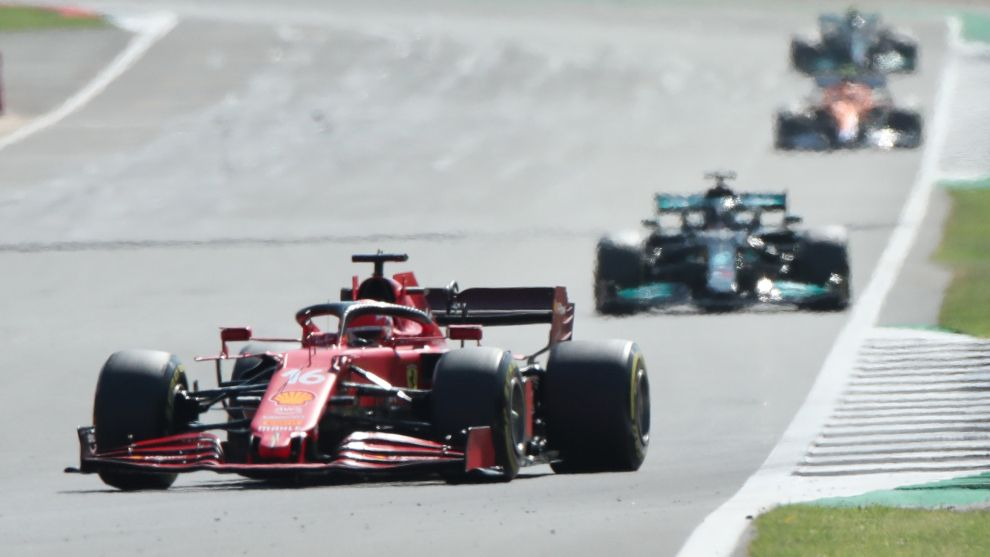

HAMILTON THE HOME HERO DESPITE CONTROVERSIAL CLASH

A record-extending eighth British Grand Prix win left Lewis Hamilton euphoric. But his clash with Max Verstappen triggered fury at Red Bull
ALEX KALINAUCKAS
There’s something about Charles Leclerc and Silverstone. In 2015 he was a rookie winner here in European Formula 3; he made his F1 weekend debut in practice for Haas at the track a year later; in 2017, despite a pre-race brake fire and a wing mirror falling off, he won the Formula 2 feature race; and in 2019 he charged to the podium after a feisty battle with Max Verstappen. Last year, he took the awful Ferrari SF1000 to the podium amid the British Grand Prix drama, and then was excellent again to seal fourth in the 70th Anniversary GP a week later, when no incidents befell the leaders. Last Sunday, Leclerc so nearly won the 2021 British GP, his excellent form all weekend rewarded with the race lead when Max Verstappen and Lewis Hamilton controversially collided on the opening lap. He would have been a thoroughly deserving race winner, even without his extra efforts coping with an ailing engine. It just wasn’t enough to defy the resurgent, penalised world champion, but here’s the story of how Leclerc nearly scored a famous victory, which ultimately went to Hamilton – to home fan joy and Red Bull fury.
FERRARI'S QUALIFYING FORM RETURNS
“If you look at Austria,” Ferrari team boss Mattia Binotto explained after the 52-lap Silverstone race had finished, “Lando Norris was on the podium doing a fantastic race. But his race pace in Austria was very similar to ours – we were simply stuck in the traffic. Being ahead from quali and the start is key.” Leclerc satisfied those requirements by taking best of the rest in ‘normal’ qualifying, setting the fifth fastest lap and then boosted to fourth when Sergio Perez lost his best Q3 time for running too wide out of Stowe Corner. Then Leclerc had a rather lonely, if flat-out, sprint race, aided by Fernando Alonso’s Alpine disrupting the McLarens’ progress and Perez falling off in his Red Bull. Those two excellent performances meant he lined up fourth again for Sunday’s Grand Prix, which immediately became third when Valtteri Bottas replicated Mercedes team-mate Hamilton’s wheelspin-heavy sprint race start. So, Leclerc steamed through Abbey and Village comfortably following Verstappen and Hamilton, and had a grandstand view of what came next.

THE CHAMPIONSHIP CONTENDERS COLLIDED
Verstappen had maintained first place at the start, but Hamilton got alongside the Red Bull by Abbey, and the polesitter had to pin his car over the exit kerbs and nearly went into the runoff. They then appeared to bang wheels running down the Wellington Straight, at the end of which Hamilton attacked around the outside and Verstappen scampered over the inside kerbs to cheekily run back ahead. But this decision took him wide out of Brooklands and onto a tight line for Luffield, which meant Hamilton could take a faster, sweeping exit and surge into Verstappen’s slipstream down the ‘national’ pit straight. At Copse, the race’s pivotal moment – and the first major flashpoint of 2021’s compelling title fight – occurred. Hamilton had “really regretted not going for the gap that was down the right-hand side” of Verstappen in the sprint race, where he’d attacked to the outside on lap one, so this time dived to the Red Bull’s inside even as Verstappen had come across to cover it. This got him tight against the pitwall and three quarters alongside his rival at the Copse turn-in point. Hamilton held his line. So did Verstappen. The result was sporting drama of the highest order. The Mercedes’ left front clipped the Red Bull’s right rear, and Verstappen was sent spinning off to a 51g impact, side on with the outside tyre barrier. From there he climbed gingerly from the wreckage, later going to Coventry hospital by helicopter for additional scans, after which he was given the all-clear. Hamilton had been slowed enough that Leclerc shot into a sensational shock lead approaching Maggotts, with the race suspended – first by the safety car being called – by the time the Ferrari reached Chapel Curve. The race, which had just entered its second lap, was then stopped for almost 30 minutes. “With the incident with Max’s car, having lost telemetry due to the size of [the accident], neither the FIA nor the team could confirm its ERS status,” explained F1 race director Michael Masi. “So, even though the light was green, we run a super-cautious approach and send two team members out, which is within the protocols that we have to check the car to make sure that it was safe before it got recovered. And then following that was the obvious repair that had to happen to the barriers.” Inevitably, both sides disagreed over who was to blame for the shunt. “It just felt like a desperate move from Lewis,” said Red Bull team boss Christian Horner. “It was a left-front wheel to a right- rear contact, so that’s not significantly alongside.” “When nobody is prepared to give in, then this kind of situation can happen,” reflected his Mercedes counterpart Toto Wolff. “But, for me, it takes two to tango.”

LECLERC ACES THE RESTART FROM LUCK HAMILTON
Hamilton’s contact with Verstappen had “failed the rim” on his left-front wheel, according to Mercedes director of trackside engineering Andrew Shovlin, which “would have been a DNF had it not been red-flagged”. As it was, Mercedes could change
“WHEN NOBODY IS PREPARED TO GIVE IN, THIS KIND OF SITUATION CAN HAPPEN. IT TAKES TWO TO TANGO”
Hamilton’s wheel, fit a fresh set of medium tyres and send him on his way to take the second standing start between Leclerc and Bottas – with the only other damage, also fixed during the red flag, being a tyre temperature sensor on his front wing that had “got knocked loose so it was waggling”, according to Shovlin. When the lights went out once again, Leclerc led Hamilton away with ease, pleased that his “engineers did an incredible job the last few races” so “now we have very good start performances”. Leclerc leapt clear so that his advantage was 1.2 seconds at the end of the first full racing lap – the fourth tour. But Hamilton, hit with a 10s penalty at the start of the next lap for causing the Verstappen clash, was lurking. And it was still super-fast Silverstone, scorching in the sun, with Ferrari just three races on from a French GP where Leclerc had been lapped after struggling horrendously with front-tyre graining. The question was how long Leclerc could defy a tyre management master. It was one he initially answered brilliantly.
FERRARI SURPRISES ITSELF WITH THE MEDIUM TYRE PACE
Given the freedom to start the race on any tyre compound thanks to the sprint race weekend format rules, all the drivers bar Perez – starting from the pitlane on the hard compound – had chosen the medium Pirellis for the first stint. “On the medium we were surprisingly good,” noted Leclerc. “The car felt incredible there and we were very quick.” How quick was demonstrated by him holding Hamilton at bay, and then edging to a 2.3s lead after lap 26 of 52. Mercedes called Hamilton in on the next lap, when his badly blistered left-front was “knocked out”. “We looked a lot in the simulators and the simulations with the drivers and the team in terms of tyre management, trying to understand what was wrong and how to address it,” said Binotto of what Ferrari has been doing to improve its tyre preservation and wear management since Paul Ricard, although Leclerc suggested that the team was still unsure exactly why it was so strong on tyre life at Silverstone. “What I’m happy and pleased to see is the progress.” But what was additionally so impressive about Leclerc’s performance was how he coped with yet more reliability peril. On lap 15, Leclerc reported an engine “cut”. Understandably agitated considering his heartbreak in Bahrain two years ago and at home in Monaco this year, he demanded to know what was happening. An engine mapping management problem was to blame, Ferrari hurriedly issuing instructions on how to alleviate the intermittent power loss. Hamilton therefore closed from 1.8s at the end of lap 14 back to a low of 0.8s on lap 17, but after that – despite one more recurrence of the power cut – Leclerc was able to pull away again. “I thought my race was over,” he reflected. “I had quite a lot of things to do on the steering wheel but we managed the situation very well, and we managed to diminish these engine cuts for the rest of the race.” Because Hamilton had to serve his penalty at his stop for hard Pirellis, rejoining behind Norris in fourth, Ferrari could afford to leave Leclerc out for a further two laps – one tour after his team-mate, Carlos Sainz Jr, had suffered a 12.3s stop because of a wheelgun sensor problem, which did not recur when Leclerc arrived.
TRAFFIC AND A "SNAP" COST LECLERC VICTORY
When Leclerc emerged on the white-walled hard tyres, he had a 7.7s lead at the end of lap 30 over Bottas – who’d fallen behind Norris at the second start, in almost identical fashion to the initial getaway versus Leclerc. The Finn was then really gifted second place when a cross-threaded wheelnut on the right rear at Norris’s stop meant Mercedes immediately pulled him in to take advantage, even if he then had to briefly, successfully, battle Fernando Alonso’s Alpine on his out-lap. But the more important gap for Leclerc on lap 30 was the one to Hamilton: 12.9s. Over the next 19 laps, the Briton lapped an average 0.634s quicker than the leader – 0.878s faster after being ordered past Bottas at Stowe on lap 40, having already passed Norris with a rather simpler pass ahead of Copse nine tours earlier. “Honestly, Charles wasn’t on my mind when I came out,” said Hamilton after clinching his fourth win of the 2021 season. “I was really trying to see if I could catch the cars ahead, just one by one. Then I saw myself catching him, but I was thinking, ‘By the time I get to him my tyres will be finished at this pace.’” But it was actually Leclerc who was having trouble with the “more fragile” hards, particularly whenever he “started to hit the traffic” as he raced on, with “my engineer telling me Lewis’s pace on the hard tyres, and I was like ‘that’s quick’. I was pushing 200%. “Behind [the traffic], I could feel the rear of the car was not as stable as I wanted it to be,” he added. “And this made us lose the pace a little bit that we had before.” Halfway around lap 49, and Hamilton was within DRS range, which he used to close further in from 0.8s behind at the end of that tour on the following lap. Leclerc and Hamilton raced down the national pit straight, and again the moment came at Copse.
"I SAW MISELF CATCH HIM, BUT I WAS THINKING, BY THE TIME I GET TO HIM MY TYRES WILL BE FINISHED"
“My heart nearly stopped when I went up the inside,” said Hamilton, “because I thought the same thing was going to happen that happened to me and Max.” But this time Hamilton was fully on the apex line through the rapid right-hander and so, even though Leclerc stuck to his own line just as Verstappen had done so much earlier in this dramatic day, the pair did not come close to contact. For a moment, it looked like the Monegasque would defy Hamilton again – at least temporarily. But suddenly the famous victory was lost, or won by Hamilton, depending on your perspective. “I knew Lewis was on the inside,” said Leclerc. “I left a space and I think I had stayed in front, but unfortunately in the very end of the corner I got a snap [of oversteer].” The Ferrari slid left off the track, clattered over the kerb and rejoined in Hamilton’s wake, the Mercedes then effortlessly pulling clear to a victory margin of 3.9s, with Bottas – minus a working drinks system for the whole hot race – 7.2s further back. “Charles was very respectful in terms of leaving a gap,” Hamilton said of the race-winning battle. “He stayed committed and just did a wider line. He nearly kept it and that was really great racing. In that moment, I backed out at one point just to make sure that we didn’t come together. “In a perfect world, that’s what would have happened in the first attempt but… different time, different place, different driver.” Wolff reckoned Mercedes was “still a little bit down on performance” compared to Red Bull, even with the technical upgrades it brought to the British GP (see page 27), and felt that “whoever is ahead [after Copse on lap one] probably drives it home”. For this reason, as great as Hamilton’s performance was in the second stint, and after everything that had gone before on that opening lap, the moral winner of Silverstone 2021 was clearly Charles Leclerc. “I was really on it every lap,” reflected the valiant runner-up, who didn’t think the engine cutting problem was the cause of his defeat. “I don’t think there was one lap where I did a big mistake. But, overall, even when everything felt good, Lewis was just much quicker than us on those hard tyres.”

STRONG MCLAREN MISSES PODIUM FINISH
A first British Grand Prix podium since 2010 looked possible for McLaren early on following the Max Verstappen/Lewis Hamilton clash, but pitstop woe took Lando Norris out of the equation. A strong Grand Prix race start aided his ascent into third, and Norris gamely kept Valtteri Bottas at bay. But Norris was forced to endure a longer wait switching his medium tyres for the hard compound, losing four seconds to Bottas due to a cross-threaded wheelnut. The Mercedes driver pounced on the delay a lap later by pitting and returning to the circuit ahead of Norris, although the two were briefly close. Bottas quickly passed the yet-to-stop Fernando Alonso to pull enough of a gap between himself and the 21-year-old. Daniel Ricciardo, meanwhile, enjoyed a race-long battle with Carlos Sainz Jr over fifth place, although he received a good dose of pitstop-related fortune to finish ahead. Ricciardo held the advantage before the pitstop phase, but Sainz’s medium tyre stint was longer, and he looked set to overcut the Australian. A slow stop for the Ferrari driver due to a wheelgun sensor problem eliminated the advantage, leaving Sainz having to try to pass Ricciardo late on to no avail, even with the aid of DRS. “On the hard tyre, it was even more difficult to overtake him,” Sainz rued. “I was understeering a lot more, and I couldn’t keep up with him at high speed.”

Red Bull top brass rage over Verstappen clash
Red Bull’s senior management made its views on the Max Verstappen/ Lewis Hamilton clash known quickly and loudly once it was clear that the Dutchman had escaped serious injury in his high-speed crash at Copse on lap one of the British Grand Prix. Team boss Christian Horner and team sporting director Jonathan Wheatley both radioed Formula 1 race director Michael Masi to express their anger at the crash, with Masi pointing Red Bull to the stewards in response. Masi did the same to Mercedes team boss Toto Wolff, who said he’d emailed Masi a document that he suggested needed to be considered when assessing Hamilton for a possible penalty. The Red Bull anger then spilled out into the media during the 30-minute red flag stoppage, with Horner accusing Hamilton of “dirty driving” on the UK’s Channel 4 coverage, and Red Bull motorsport advisor Helmut Marko telling Sky Germany that he thought the world champion “should be punished with a suspension or something” because of “negligent to dangerous behaviour”. Hamilton was handed a 10-second penalty to be served at his pitstop, but was able to battle back in the restarted race to beat Ferrari’s Charles Leclerc. When asked if he was still angry in the aftermath of the Silverstone race – where Sergio Perez in the second Red Bull came home 16th after an unusual three-stop strategy and a late clash with Kimi Raikkonen at Club – Horner said: “Well, putting a fellow driver in the hospital, writing off the car, receiving a menial penalty but still the winning the GP, it doesn’t feel like much of a penalty.” But Horner was annoyed at Wolff going to visit the stewards during the red flag, saying: “I don’t think the stewards should be interfered with.” Wolff said he “went up and gave my opinion”, and that he’d “been to the stewards many times in my life”.
O FIM DE SEMANA
ASSUNTO 1
[NOTA].
ASSUNTO 2
[NOTA 2]
[ASSUNTO 3
[NOTA 3]
[ASSUNTO 4]
NOTA 4
[ASSUNTO 5]
[NOTA 5]
[ASSUNTO 6]
[NOTA 6]